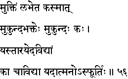
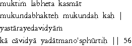

|

|
Verse 56 - Meaning:
Q:How is (kasmaat) liberation (muktim) attained (labheta) ?
A:By whole-hearted devotion (bhakteh)to "Mukunda" or the Supreme Being.
Q:Who (kah) is "Mukunda" ?
A:It is the Being who enables Jiivaas to overcome (yas-taarayed) the sea of Ignorance (avidyaam).
Q:What is (ka ca) Ignorance (Avidya) ?
A:It is the state of absence of the full knowledge (a-sphuurtih) of one's true self.(aatman)
|